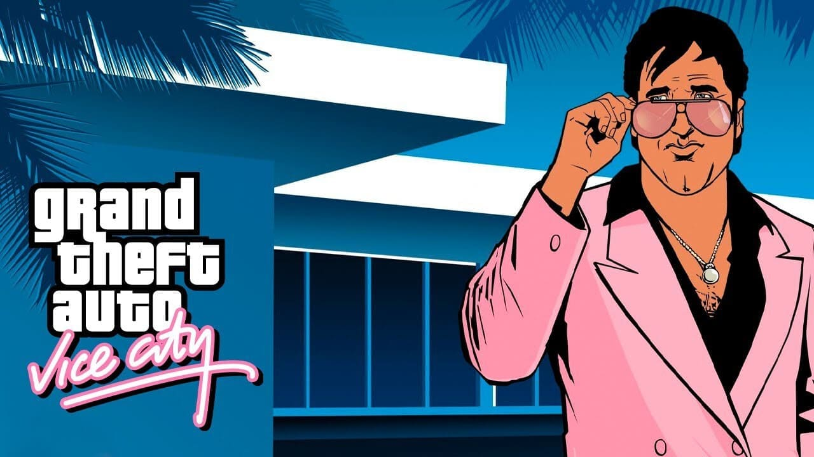
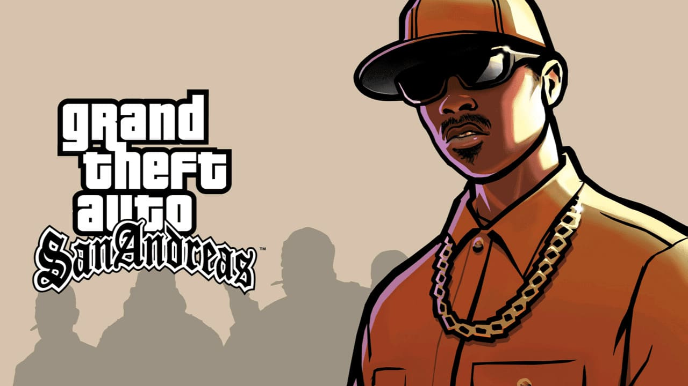
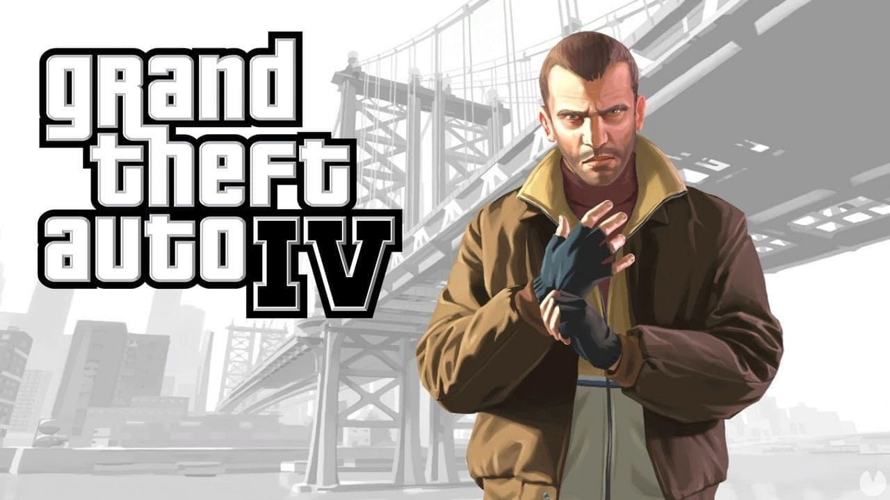
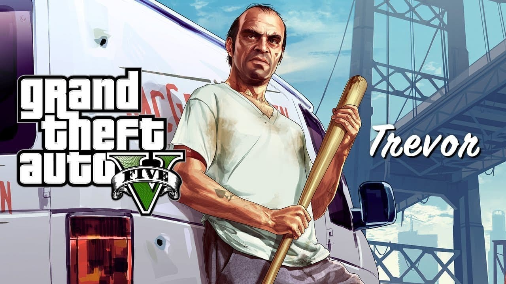

GRAND THEFT AUTO SAGA
Rockstar Games es el desarrollador de la popular serie de videojuegos conocida como Grand Theft Auto. Esta saga, que comenzó en 1997, ha crecido hasta alcanzar un impresionante total de 47 juegos. Estos títulos están disponibles en una amplia variedad de plataformas, como PS5, Xbox Series X/S, Switch, PS4, Xbox One, Android, iPhone, NDS, PS3, Xbox 360, PSP, Game Boy Advance, Xbox, PC, PS2, Dreamcast y PS One.
Portafolio GTA VI Noticias